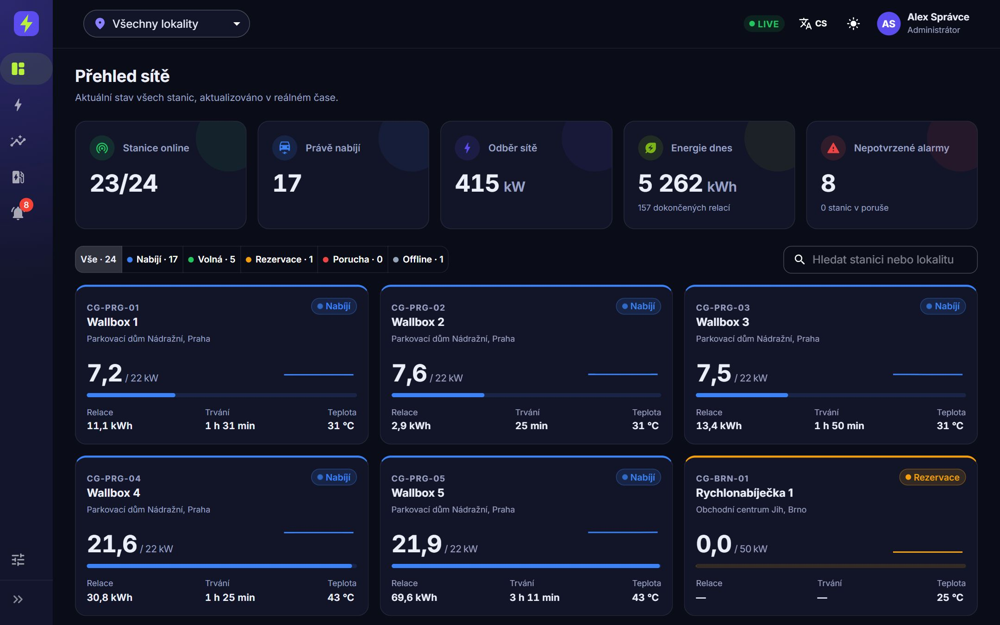

🧭
Přehled sítě
Stanice online, právě nabíjející, odběr sítě a energie za den. Filtr podle stavu, lokality i fulltextu.
Stavíme dobíjecí stanice od Aše po Jablunkov a propojujeme je do jedné chytré sítě. Charge Grid je náš dispečink: živá telemetrie, historie provozu, relace i alarmy ze všech stanic na jedné obrazovce.
* Podle nás. Ale věříme tomu.
Rozbitá nabíječka. Aplikace, která tvrdí, že je volno. Tři různé karty v peněžence. Každý řidič elektromobilu zná ty slzy. Proto jsme vznikli.
No More Tears buduje celorepublikovou síť rychlonabíjecích stanic a nad ní jediný datový mozek — Charge Grid. Víme o každém konektoru, každé kilowatthodině a každé poruše dřív, než si jí někdo všimne.
Dispečink, ve kterém operátoři vidí celou síť nabíjecích stanic v reálném čase — od výkonu jednotlivého konektoru po tržby za celý měsíc. Prohlédněte si skutečné obrazovky, nebo si aplikaci rovnou vyzkoušejte.

Přihlaste se jedním z demo účtů — Administrátor, Operátor nebo Čtenář — a uvidíte, jak se aplikace mění podle role. Heslo je stejné jako uživatelské jméno, na přihlašovací obrazovce stačí účet jen vybrat. Data jsou smyšlená a generují se přímo v prohlížeči.
Stanice online, právě nabíjející, odběr sítě a energie za den. Filtr podle stavu, lokality i fulltextu.
Výkon, napětí a teplota streamované přes WebSocket každé 2 sekundy, plynule navázané na historii.
Energie po dnech podle lokalit, tržby, vytížení stanic a časová osa dostupnosti za libovolné období.
Každé nabíjení s energií, cenou a RFID identifikátorem. Filtrování, řazení a export dat.
Přehřátí konektoru, proudový chránič, ztráta komunikace i výpadky. Rozlišení závažnosti a potvrzování operátorem.
Časová osa stavů, průběh výkonu a teploty s limitem, konektor, tarif a dostupnost na jednom místě.
Správa stanic, lokalit, uživatelů a tarifů — cena za energii i za čas strávený u stanice.
Role Administrátor, Operátor a Čtenář. Rozhraní v češtině i angličtině, světlý i tmavý režim.
Ukázka veřejného vyhledávání Charge Grid. Klikni na stanici a zobraz detail.
Tři společníci, jedna garáž v Holešovicích a první pilotní stanice.
Spuštění platformy pro realtime monitoring 200 nabíjecích bodů.
Pokrytí celé republiky, veřejná aplikace pro řidiče a rezervace.
Obousměrné nabíjení — auta jako baterie, která stabilizuje síť.
Expanze na Slovensko, do Polska a Rakouska.
Energetika, software a stavba. Každý z nás drží jeden pilíř — dohromady pokryjeme vše od trafostanice po aplikaci v telefonu.
15 let v distribuci elektřiny. Vyjedná připojení k síti tam, kde ostatní vzdají. Zodpovídá za strategii, partnerství a energetickou legislativu.
Architekt Charge Grid s více než 10 lety praxe ve vývoji softwaru. Stojí za realtime pipeline, prediktivními modely a bezpečností platformy.
Postavil přes 300 technologických staveb. Řídí výstavbu stanic, servisní týmy v terénu a dodavatelský řetězec.
Ano. Vyhledávání, stav stanic i plánovač trasy jsou zdarma. Platíte jen za nabitou energii.
Ano, živé demo běží na chargegrid.bartosdev.cz. Vyberte demo účet Administrátor, Operátor nebo Čtenář — heslo je stejné jako uživatelské jméno. Všechna data v demu jsou smyšlená.
Ano. Platforma podporuje standard OCPP 1.6 i 2.0.1, takže připojíte prakticky jakoukoli moderní stanici.
Telemetrie ze stanic přichází každé 2 sekundy, takže alarm se v dispečinku objeví prakticky okamžitě — i s kódem poruchy a závažností.
Výhradně v datových centrech v České republice, šifrovaná a v souladu s GDPR a NIS2.
Rádi. Zajistíme vše od projektu a připojení k distribuční síti po provoz a servis. Napište nám.
Ať jste obec, firma, provozovatel nebo investor — ukážeme vám Charge Grid naživo.